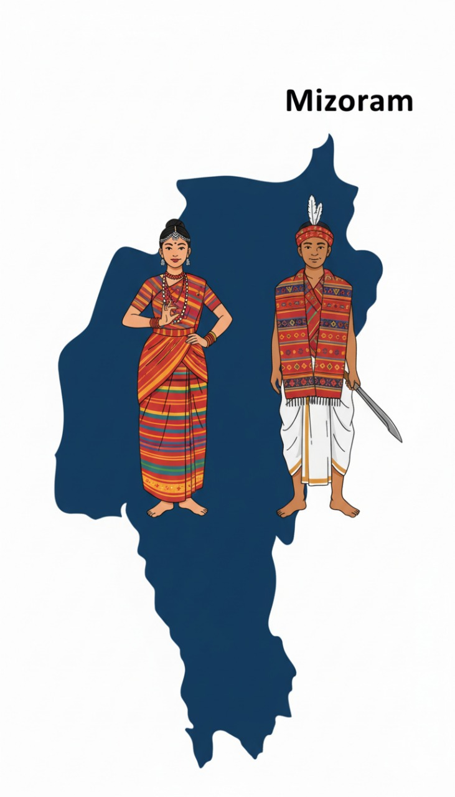

Quick history of Mizoram
Mizoram — literally "land of Blue Mountains" — is also known as the " Land of the Highlanders" is a beautiful , mountainous state in northeast india , sharing borders with Myanmar and Bangladesh.It boasts the highest concentration of tribal people in india and is one of the country's most literate states.
Hilly state with steep slopes , are centered around intense and erratic rainfall patterns.

Capital: AizawlStatehood: 1987
Detailed timeline & preparedness tips
- "Thingtam" - crisis — rodent outbreak leading to widespread crop destruction and potential food scarcity. .
- Common impacts — massive rodent population turns to standing crops and granaries, destroying paddy, maize, sugarcane, and various vegetables.
- Preparedness tips — Store all food and grain in rat-proof containers and granaries, Take first-aid and CPR classes with a local organization.
- How you can help — support verified local relief funds/NGOs, donate through government-endorsed channels, or volunteer through district disaster management teams.